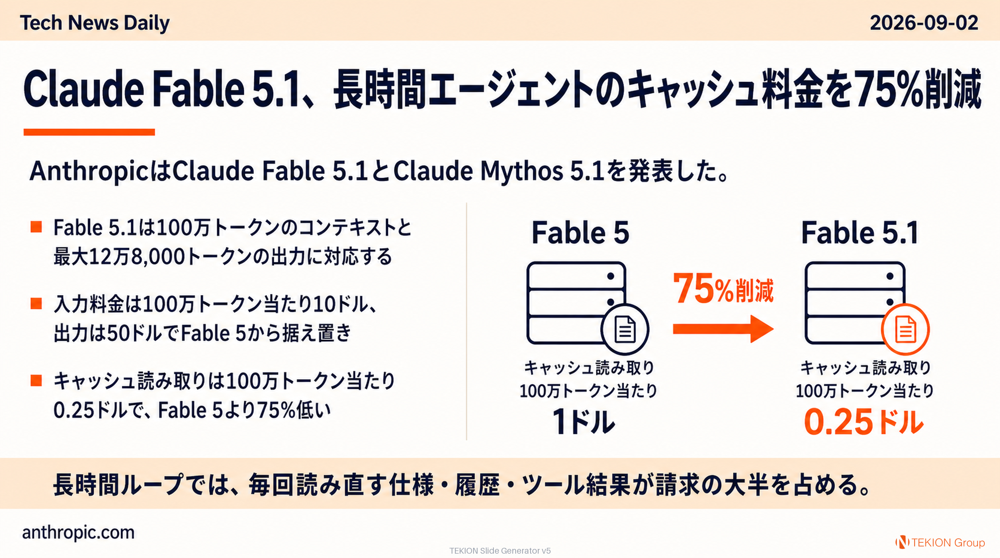

フロンティアモデル · Anthropic公式
Claude Fable 5.1、長時間エージェントのキャッシュ料金を75%削減

AnthropicはClaude Fable 5.1とClaude Mythos 5.1を発表した。基盤モデルは同じで、一般提供のFableと、サイバー防御・生命科学向けの制限アクセス版Mythosに安全対策の強度差を設けている。
- Fable 5.1は100万トークンのコンテキストと最大12万8,000トークンの出力に対応する
- 入力は100万トークン当たり10ドル、出力は50ドルでFable 5から据え置き
- キャッシュ読み取りは100万トークン当たり0.25ドルで、Fable 5より75%低い
- Anthropicは典型的な処理で約25%、エージェント処理の比率が高い場合は最大45%のコスト減と試算する